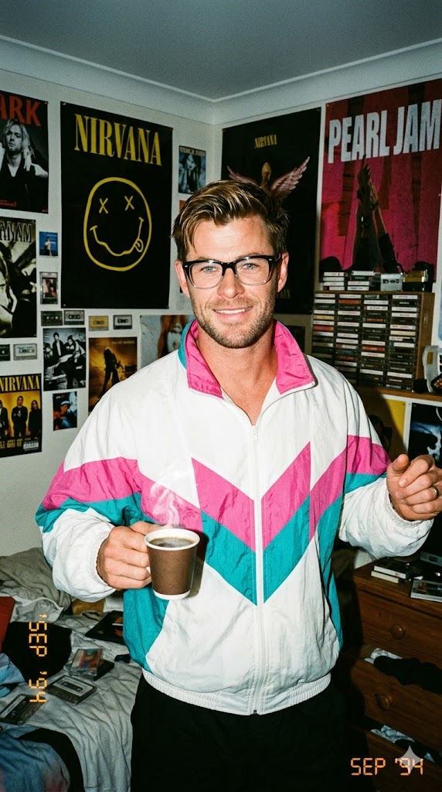
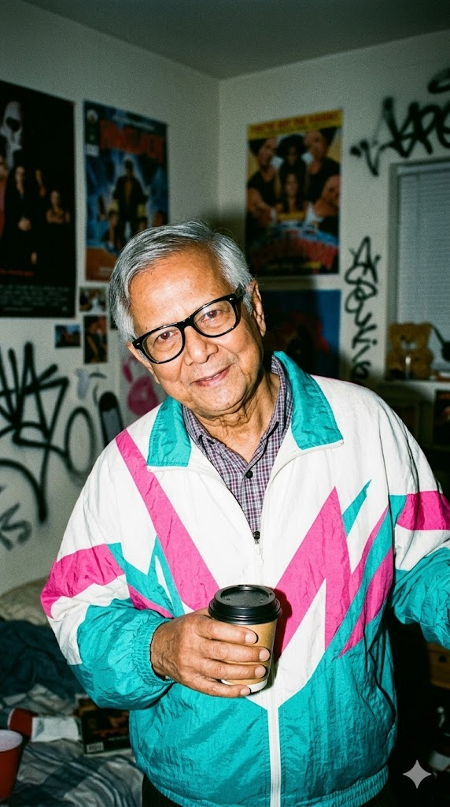

"How to Create a Raw 90s Candid Snapshot with Exact Face Match" | Brainloom
Generate a gritty, authentic 1990s-style candid photo of yourself caught in motion with a retro windbreaker, harsh flash, and heavy film grain. This prompt captures vintage energy while keeping your facial identity perfectly intact.
Generated Images


Prompt Explanation
The Prompt
A raw and candid 35mm film photo, looking directly at the camera, capturing the figure from the uploaded reference photo in a spontaneous moment full of 1990s energy. The figure is caught in motion, grooving to the music with their head slightly tilted with attitude, shoulders moving to the rhythm, holding a hot cup of coffee in one hand, and wearing black-framed glasses with clear lenses. They are wearing a striking retro windbreaker jacket with a bold abstract zigzag pattern combining white, pink, and teal green. They are standing in a messy, era-appropriate environment, such as a teenager's bedroom covered in band posters or a city street corner with concrete textures. The photography aesthetic feels like a snapshot from a Canon Sure Shot point-and-shoot camera. The direct on-camera flash is very harsh, creating intensely bright highlights on the nylon material of the windbreaker and the skin, along with sharp, dark shadows directly behind the subject. The vibe feels authentic, gritty, and completely untouched by the social media era. The final image features heavy film grain, characteristic color saturation shifts, and a slight vignette common to consumer film of that decade. Despite the dynamic expression and movement, the original facial structure of the figure in the reference photo remains identical and unchanged. Aspect ratio 9:16
How to Use This Prompt
Start by uploading a clear reference photo of your face to your AI image generator. For this prompt, a neutral expression works well because the final image will add attitude and movement. Copy the image link and paste it at the very beginning of your prompt field. Then add the complete prompt text. The key to this prompt is embracing imperfection—you're asking for harsh flash, heavy grain, and messy environments, which are all intentional aesthetic choices. When you run the first generation, look for images that capture the 90s energy and your facial identity. The 'caught in motion' instruction means some blur or dynamic posing is expected. Pay attention to the windbreaker pattern—the zigzag combination of white, pink, and teal green is very specific. If it's not rendering correctly, you can add more emphasis: 'bold abstract zigzag pattern, clearly visible.' The glasses with clear lenses might sometimes render as sunglasses—if that happens, add 'clear non-prescription lenses, frames only' in your next iteration. The aspect ratio 9:16 creates a vertical frame perfect for period-appropriate polaroid-style shots or social media. If the harsh flash is too intense and washing out your features, try 'harsh but balanced flash.' If it's not harsh enough, use 'extremely harsh direct flash.' Run multiple generations, selecting the images that best capture that authentic, pre-social-media grittiness while keeping your face recognizable.
Why This Prompt Works
This prompt succeeds because it completely rejects the polished, perfected aesthetic that most AI prompts pursue, and instead embraces the specific visual language of 1990s consumer photography. The AI's training data includes millions of these imperfect snapshots, and this prompt gives it precise permission to generate images with those same 'flaws'—harsh flash, heavy grain, color shifts—that most users spend hours trying to eliminate. The structure is brilliantly organized. It opens with the core concept—'raw and candid 35mm film photo'—immediately establishing the aesthetic framework. Then it locks in the non-negotiable: 'capturing the figure from the uploaded reference photo.' This must come early because everything else builds on your identity. The prompt then builds the scene through specific, era-appropriate details. 'Grooving to the music,' 'head slightly tilted with attitude,' 'shoulders moving to the rhythm'—these aren't generic pose instructions. They describe a specific kind of 90s energy, the kind found in youth culture photography of the decade. The clothing description is masterfully detailed: 'retro windbreaker jacket with a bold abstract zigzag pattern combining white, pink, and teal green.' This level of specificity is necessary because '90s jacket' could generate anything. By naming colors and pattern style, you're guiding the AI toward a very specific fashion moment. The prompt offers two environment options—'teenager's bedroom covered in band posters' or 'city street corner with concrete textures'—which gives the AI creative flexibility while keeping the era consistent. The technical specification of the 'Canon Sure Shot point-and-shoot camera' is genius. This was a specific, ubiquitous consumer camera of the era. Naming it tells the AI to mimic the optical characteristics of that exact device: the flash quality, the lens softness, the overall snapshot aesthetic. The instructions about 'harsh direct flash,' 'intensely bright highlights on nylon,' and 'sharp, dark shadows' are all technical descriptions of how these cameras actually performed. The final insistence that 'despite the dynamic expression and movement, the original facial structure... remains identical' is crucial—it tells the AI that all this wonderful chaos should happen around your face, not on it.
Prompt Variations
- {'variation': "Change the setting to 'a roller rink with neon lights and carpet patterns' and the activity to 'skating backward, looking over shoulder, laughing.' This shifts the energy to pure 90s nostalgia fun, perfect for retro-themed content or playful personal branding."}
- {'variation': "Replace the windbreaker with 'an oversized flannel shirt tied at the waist, ripped jeans, and chunky sneakers' and the environment to 'a grungy basement show with band equipment in the background.' This variation captures the alternative 90s aesthetic, ideal for music-related concepts."}
- {'variation': "Modify the camera specification to 'disposable camera aesthetic with flash, slightly underexposed corners, date stamp in corner.' This creates an even more lo-fi, amateur snapshot feel, perfect for evoking specific memories of 90s family vacations or school events."}
Frequently Asked Questions
-
Why would I want 'harsh flash' and 'heavy grain'? Aren't those bad in photography?In traditional photography, yes—but here they're aesthetic choices that create authenticity. The 90s snapshot aesthetic is defined by these 'flaws.' Harsh flash overexposes highlights and creates deep shadows, while heavy grain adds texture that feels tactile and real. Together, they transport the image to a specific time before digital perfection.
-
How do I keep my face recognizable with all the motion and flash effects?The prompt includes 'despite the dynamic expression and movement, the original facial structure... remains identical.' This tells the AI to prioritize your features even within the chaotic aesthetic. If your face is still getting lost, try adding 'face clearly visible and recognizable beneath flash highlights' to strengthen the instruction.
-
What does 'color saturation shifts' mean for the final image?Consumer film from the 90s often had inconsistent color reproduction—certain films made reds pop while muting blues, or shifted skin tones slightly magenta. By asking for these shifts, you're telling the AI to avoid perfect, neutral color and instead mimic the imperfect, characterful color of real 90s film stocks.
Related Prompts

Photorealistic Character With Comic Backdrop
AI art prompt to create a striking composition where the main subject is rendered in full photorealistic color while ...
View Prompt
High Fashion Editorial Portrait Triptych Identity Lock
Luxury fashion editorial triptych preserving your exact face with zero alteration. Three vertical frames: hand near m...
View Prompt
Vintage Bookstore Cinematic Portrait 1990s Aesthetic Prompt
Generate an ultra-realistic luxury editorial portrait of yourself in a vintage bookstore, captured through dusty glas...
View Prompt
How To Create A Fisheye Street Luxury Portrait
Generate a dramatic ultra-wide 10mm fisheye portrait with extreme high-angle perspective. Perfect for achieving edito...
View Prompt
Ai Prompt Double Exposure Superhero Poster Art
Create a dramatic AI poster of a superhero using a double-exposure effect. The right side of the face is realistic an...
View Prompt
How To Create A Dramatic Low Angle Fashion Photoshoot With 14mm Lens
Create a bold ultra-wide fashion image with dramatic forced perspective, strong studio lighting, and branded styling ...
View Prompt